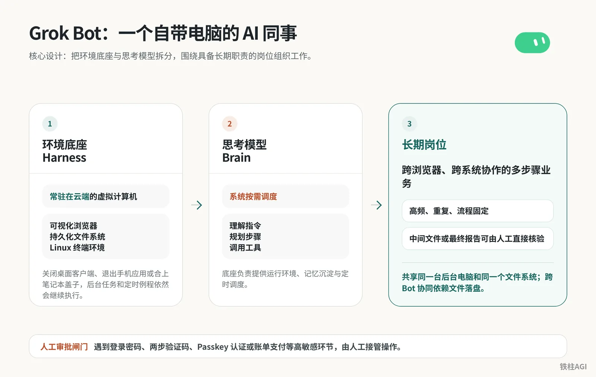
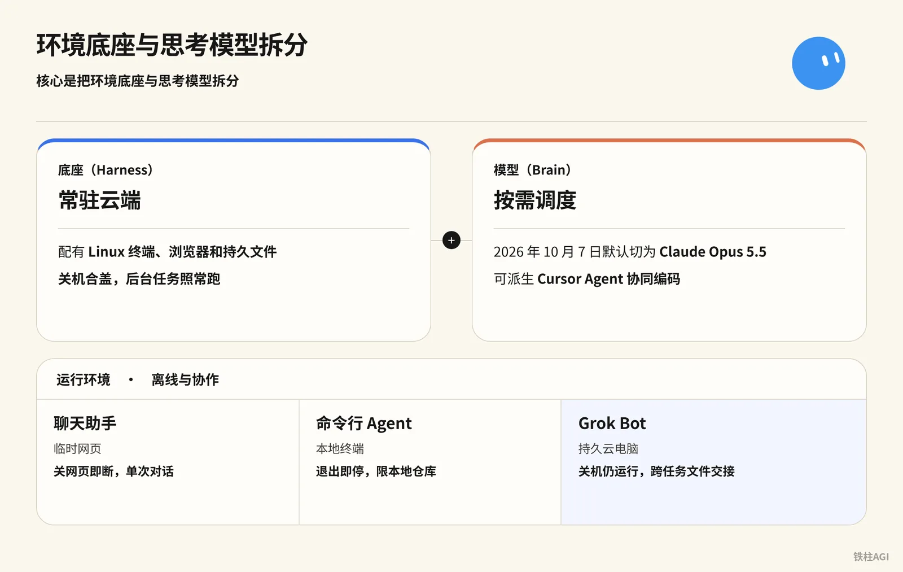
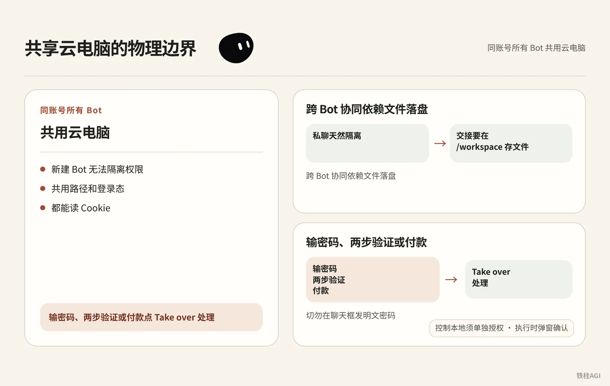
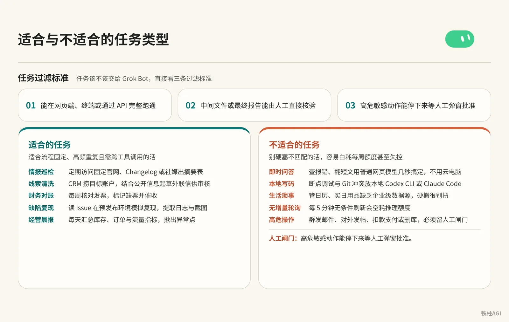
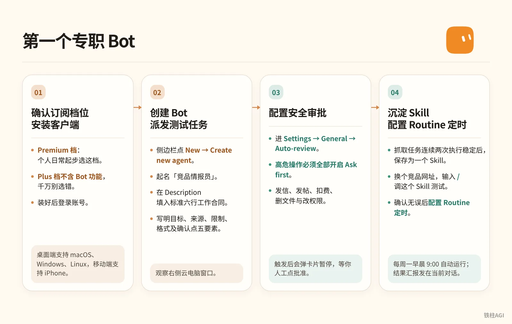

铁柱AGI · 15/60
第 1 章 Grok Bot 是什么：一个自带电脑的 AI 同事
传统网页对话无法积累资产，合上电脑任务直接中断。面对跨软件调用与持续巡检，人依然被拴在电脑前机械点击。
本章包含四项核心内容。
- 它的运行机制与共享云电脑的物理边界；
- 适合与不适合承接的任务类型；
- 它与市面上其他常驻 Agent (an AI that takes steps on its own to finish a task) 的选型差异；
- 写出符合规范的岗位说明，并设立防止越权的人工审批闸门。

Grok Bot (xAI's AI assistant that comes with its own computer) 的底层运行机制是什么？
Grok Bot 核心是将常驻云端的 Linux 底座与按需调度的思考模型拆分，配有终端、浏览器和持久文件，即便电脑关机合盖，后台任务照样能在云电脑中继续运行。

xAI 与 Cursor 在 2026 年 8 月 11 日推出 Grok Bot，核心是把环境底座与思考模型拆分。
- 底座（Harness）：常驻云端，配有 Linux 终端、浏览器和持久文件。关机合盖，后台任务照常跑。
- 模型（Brain）：按需调度，不绑定单一模型，也不能查看或指定。2026 年 10 月 7 日起任务可能路由到 Claude Opus 5.5 等模型，也可派生 Cursor Agent 协同编码。
| 工具 | 运行环境 | 离线与协作 |
|---|---|---|
| 聊天助手 | 临时网页 | 关网页即断，单次对话 |
| 命令行 Agent | 本地终端 | 退出即停，限本地仓库 |
| Grok Bot | 持久云电脑 | 关机仍运行，跨任务文件交接 |
机制参考 《1.1 Grok Bot 是什么：一页看懂》。
Grok Bot 共享云电脑如何隔离与接管？
同账号所有 Bot 共用云电脑且无法隔离路径与 Cookie，跨任务交接需在 /workspace 存文件，遇输密码或付款等操作可点击 Take over 手动接管。

同账号所有 Bot 共用云电脑。Heavy 档实测至强 8 核 8 线程、16GB 内存、128GB 硬盘（未核，官方为准），v0.68.1 分辨率升到 1920×1200。
规范见 Grok Bot 计算机和应用文档。
- 新建 Bot 无法隔离权限。共用路径和登录态，都能读 Cookie。
- 跨 Bot 协同依赖文件落盘。私聊天然隔离，交接要在
/workspace存文件。 - 输密码、两步验证或付款点 Take over 处理，切勿在聊天框发明文密码。
- 控制本地须单独授权。与本地隔离，去 Settings → General → Agent → Execution on Local Computer 开启，执行时弹窗确认。
Grok Bot 适合与不适合做哪些任务？
Grok Bot 适合流程固定、高频重复且需跨工具调用的任务，例如情报巡检与缺陷复现，但不适合即时问答、本地写码及无人工闸门的高危操作。

任务过滤标准
任务该不该交给 Grok Bot，直接看三条过滤标准。
- 能在网页端、终端或通过 API (a way for programs to talk to each other) 完整跑通；
- 中间文件或最终报告能由人工直接核验；
- 高危敏感动作能停下来等人工弹窗批准。
适合的任务
适合流程固定、高频重复且需跨工具调用的活。
- 情报巡检：定期访问固定官网出摘要表。
- 线索清洗：CRM 捞目标账户，结合公开信息起草外联信供审核。
- 财务对账：每周核对发票，标记缺票并催收。
- 缺陷复现：读 Issue 在预发布环境复现，提取日志与截图。
- 经营晨报：每天汇总库存指标，揪出异常点。
不适合的任务
别硬塞不匹配的活，容易白耗每周额度 (quota (how much use your plan allows))甚至失控。
- 即时问答：查报错用普通网页模型几秒搞定，不用云电脑。
- 本地写码：断点调试与 Git 冲突放本地 Codex CLI 或 Claude Code。
- 生活琐事：管日历缺乏企业级数据源，硬搬很别扭。
- 无增量轮询：每 5 分钟无条件刷新会空耗推理额度。
- 高危操作：群发邮件与删库必须留人工闸门。
规划方法参考 《1.2 Grok Bot 和 Muse、Hermes、dots、Cue 怎么选》。
选型对照：Grok Bot 与主流常驻 Agent 横向对比
整机与组装机形态
选常驻 Agent 主要看图省心还是爱折腾。开箱即用的整机（Grok Bot、Muse）免去部署烦恼，但受平台额度限制；组装机（Hermes）接开源模型无额度约束，但环境报错得自己修。
主流常驻 Agent 特性与选型对照
| 产品 | 底座与门槛 | 特点与适用场景 |
|---|---|---|
| Grok Bot | 共享 Linux 云电脑。2026-10-12 起执行 The X Subscription 统一方案（Premium $30/月、Super $100/月、Ultra $200/月），Plus 档不含 Bot；客户端 v0.70.2 支持独立邮箱与连接卡片 | 7×24 小时常驻，支持例程与技能 (skill (a saved how-to the bot can reuse))，多 Bot 异步交接文件并调 X 平台检索。适合免运维、多岗位协同与巡检对账 |
| OpenAI dots | 个人常驻云电脑，ChatGPT Pro 与 Business Premium 包含首个 dot | 基于 GPT-6 Astra（dots 于 2026-09-29 上线），常驻后台连 4000 多个应用，主打日常伴随与轻量代办 |
| Manus Cue | 独立云电脑，处于早期体验阶段 | 2026-09-29 铁柱上手体验；原生配独立协同邮箱、电话与钱包，自主跑腿注册与采购，自主权极高且伴随操作风险 |
| Meta Muse | Meta 托管云端代理，诺鸭船长评测偏家庭生态 | 深度绑定 Meta 社交网络与硬件，适合家庭日常与社交辅助 |
| Hermes | 本地或私有服务器，开源自建 | 自由更换开源模型，无商业额度限制。适合本地敏感数据流水线，需自己动手配环境与排错 |
详细推文对比参考 《铁柱推文合集④：社区、生态与竞品对照》。
典型实战案例拆解
金尘马的情报总监（个人调研岗位）
金尘马（@jinchenma_ai）曾在 Edit Profile 的 Description 写明长期岗位规则（该菜单已移除，现行做法见第 3 章），定性为情报调研员。派单落实结果与来源、限制与格式及确认点五要素，检索 X 平台长文并区分视频帖，标明曝光数据，无一手数据严禁编造。
首次纠偏格式后，指令 Bot 把流程沉淀为 Skill (a saved how-to the bot can reuse)「AI 教程情报搜集」。
换第二组输入测通后配置 Routine，定在每个工作日早上 8:10 自动执行汇报；新建「内容总监」评审选题，初稿存入 /workspace/grokbot-demo/。
岗位说明沉淀长期规则，临时需求走消息，多 Bot 经 /workspace 落盘解耦。
细节见《万字长文｜Grok Bot 从入门到精通｜金尘马》。
金尘马的电商运营团队（多角色分工流水线）
团队由 4 个 Bot 协同。先建「店铺经营值班员」读商品表、库存表与订单表发晨报，卡死只读红线，严禁改价改库存，也不得发信或退款。
原值班员升级为「电商运营主管」，拆出内容增长专员、商品库存分析员与订单售后助理，数据存入 /workspace/ecommerce-ops/日期/。遇爆款仅剩 3 天库存，内容专员暂停推广，售后助理备好延期话术，主管汇总决策清单。
不要起手搭建庞大团队，涉及资金、库存与外部发信的操作全部锁定人工审批。
铁柱的开源仓库管理员 Bot（自动化运维巡检）
铁柱AGI（@cgnot996）建常驻 Bot 维护 awesome-grok-bot 知识库。系统定期巡检 X 平台推文、官方更新日志与技术社群，将新玩法、教程、官方文档和活动分类收录。
宣发前已自动收录相关资料，2026 年 8 月突破 130+ Star（作者自述，未核），并获官方人员申请表单邀请。
新手上路：从开通到第一个专职 Bot

确认订阅档位与安装客户端
按 2026 年 10 月 12 日起执行的 The X Subscription 统一方案选档：
Premium 档：$30/月（年付 $300），4x 额度池，个人日常起步选这档。
Super 档：$100/月（年付 $1000），15x 额度池，适合重度研究与多例程。
Ultra 档：$200/月（年付 $2000），50x 额度池，适合高频团队主力。
$8/月（年付 $80）的 Plus 档不含 Bot 功能，千万别选错。已有 Cursor 付费个人版或团队版、SuperGrok (xAI's paid subscription plan) 订阅或 Grok Business 席位也能直接用。
桌面端支持 macOS、Windows、Linux，移动端支持 iPhone、iPad 与 Android，装好后登录账号。
创建 Bot 并派发测试任务
- 侧边栏点 +（或 Cmd+N）创建 Bot，起名「竞品情报员」。个人 Bot 已没有 Description，把下面六行发在对话里并让它记住；共享 Bot 写在详情 About 的 Description。
Own: 负责监控目标清单的每周功能更新与定价变动
Sources: Notion 中的关注名单、目标官网 Changelog 页面
Output: 不超过 8 条核心动态，附带日期与原始链接，存入 /workspace/scan.md
Approval: 严禁对外发布任何内容，严禁主动发送任何邮件
Failure: 若目标页面无法打开，在报告中明确标为数据缺失，严禁推测或编造内容
Never: 在源系统可访问时，严禁依赖自身记忆给出概括- 在对话框下发测试指令，写明目标、来源、限制、格式及确认点五要素。
调研所附竞品清单中的前 3 个产品官网。
比对它们过去两周内的功能更新与价格调整。
跳过无任何变动的模块。
提取核心变动点，整理成 Markdown 表格，并直接保存到 /workspace/scan.md。
在对话框中仅回复处理状态与保存路径；不要对外发送任何通知，不要擅自更改系统设置。- 观察右侧云电脑窗口。Bot 会自动唤起云端浏览器提取页面，并把内容写入指定文件。
配置安全审批与定时例程
进 Settings → General → Auto-review，高危操作必须全部开启 Ask first。
卡死发信（
send）、发帖（post）、扣费（buy）、删文件（delete，含/workspace或本地文件）与改权限（permissions），触发后会弹卡片暂停，等你人工点批准。抓取任务连续两次执行稳定后，在对话框发送沉淀指令。
把刚才已经跑通的竞品页面抓取与格式整理流程保存为一个 Skill，名称叫「竞品动态巡检」。
写清调用条件、所需权限、抓取步骤、异常报错逻辑与产出文件格式。- 换个竞品网址，输入
/调这个 Skill 测试。确认无误后配置 Routine (a task the bot runs on a schedule or a trigger) 定时，设在每周一早晨 9:00 自动运行，结果汇报发在当前对话，详细报告存入/workspace。
容易踩的坑
架构与安全
- 看到社区 29 个 Bot 架构（Melvin Vivas 自述，未核）别跟风，同质化 Bot 易乱且费额度。一个岗位没跑顺前，不要建第二个。
- 所有 Bot 共享云电脑与文件系统，爬虫能读
/workspace和 Cookie。安全控制只能靠 Ask first 人工审批闸门。 - 别在聊天框发账号密码。遇到登录界面，调出右侧屏幕点 Take over 按钮由人工登录。
资源与预期
- 每月 $8 的 Plus 档没有 Bot 入口，必须认准每月 $30 起步的 Premium 档。
- Routine 设 5 或 10 分钟轮询会掏空每周额度池。要拉长定时任务 (scheduled task (a job that runs at set times))间隔，并加未更新即退出逻辑。
- 别轻信 Alex Finn 盈利或 0xkvro 降本神话（自述，未核），业务以实际跑通的指标为准。
做完怎么验收
- 侧边栏点 Bot 进聊天，发消息展开 1920×1200 实时桌面；去 Usage & Billing 确认方案是 Premium、Super 或 Ultra，进度条正常。
- 六行合同须写齐职责、数据源、产出物、审批红线与缺数兜底（六行硬约束）。个人 Bot 发在对话里让它记住，共享 Bot 写在详情 About。发死链测它，必须如实报缺，不瞎编数据。
- Settings → General → Auto-review 里，把
send、post、buy、delete、permissions设为 Ask first。测发信或删文件，必须弹审批卡片等人工确认。 - Routine 右键 Test run 跑通后合盖关软件。到点重开看提醒，进云电脑
/workspace，确认 Markdown (a simple way to format text with symbols) 或 CSV 按最新时间戳更新。
延伸阅读
相关章节
- 第 5 章 共享云电脑：文件、浏览器与接管
- 第 6 章 记忆：让 Bot 越用越懂你
- 第 7 章 连接应用：插件、邮箱与 Secrets
- 第 11 章 权限、安全与人闸
- Grok 和 Grok Bot 有什么区别
- 第 2 章 方案与订阅：先选对档位
官方页面与文档
- Grok Bot 快速入门指南
- 使用 Grok Bot：计算机、应用与任务
- Grok Bot 使用场景与典型角色
- 面向团队版和企业版的 Grok Bot
- Grok Bot 方案与计费说明
- 团队 Bot 使用规范
- Grok Bot 安全架构与 Auto-review 规则